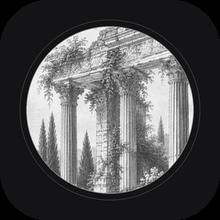

Icon studies
Two families. The marks are constructed — geometry and type, nothing photographic — which is what lets them survive being 40pt on a Home Screen. The framings below are all one plate, so they can only differ by a shade.
Drawn marks — geometry and type, no engraving
Portal
A temple cut out of a solid tile. All silhouette, no picture — the one that still reads at 20pt.
Fluted V
The letter built as two shafts of the order, fluted, with a capital across the top.
Seal
A stamp rather than a scene: a ring of ticks around one letter, name beneath.
Letterpress
Type alone, set between rules on paper. No mark at all — the name is the mark.
Pediment
The building reduced to its front, drawn in ink on paper.
Framings of the plate
Frame
Drawn border, name in a solid foot. Reads as a plate in a book.
Frame, light
The same construction on paper — the border is what survives being shrunk to 40pt.
Cartouche
The plate cut to an arch, the way the building ends, name in the ink margin below.
Placard
The name on a museum label rather than across the picture. Double rule, small plaque.
Masthead
An editorial band across the top: the word reads before the engraving does.
Portico
The plate as it is, wordmark on a gradient foot. Closest to what ships.
Columns
Cropped to the order itself — reads where the wide scene turns to mush.
Monogram
One letter cut out of the plate. The only one that works with no name at all.
Statue
The figure instead of the architecture: a face on the Home Screen.

Medallion
The plate in a ring on flat ink, no type, so it never repeats the label beneath it.
Plate
Cream ground, ink engraving — the same icon in light.
Rule
Wordmark over a hairline with the second word tracked beneath. The most formal.
Built at 1024 from WindowAtmosphere — the clean plate. VampBackdrop carries the wordmark baked in, which is why type drawn over it printed VAMP twice.